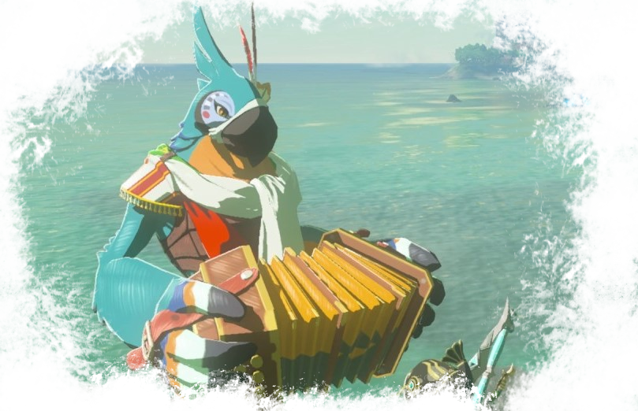
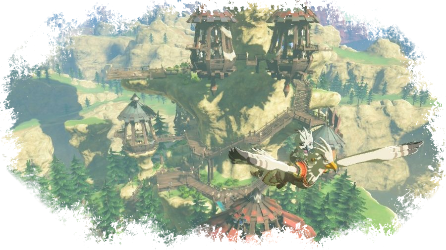
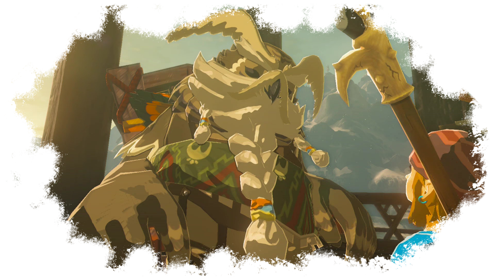
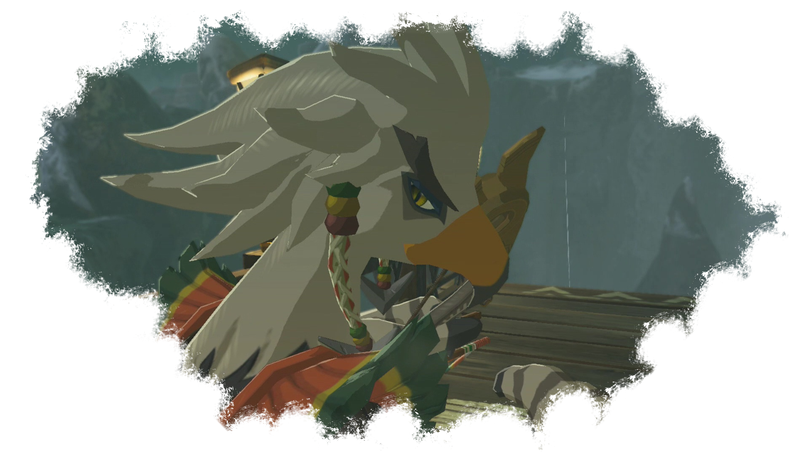
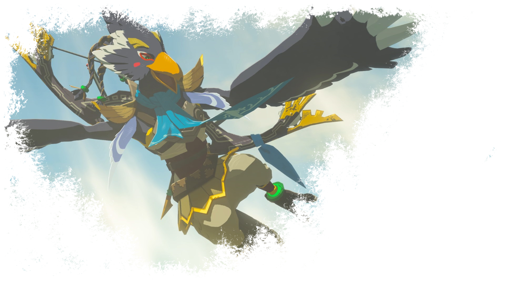

Les Piafs

Les piafs sont des hommes-oiseaux. Bien plus proche de l'animal que de l'humanoïde sur le plan physique, ils possèdent un bec, des ailes et même des serres. Leur plumage varie selon l'individu et ils être de plusieurs couleurs. Le type d'oiseau auquel ressemble l'individu varie lui aussi. Les adultes sont capable de voler et parviennent à réaliser des prouesses aériennes avec une facilité déconcertante.
Les piafs sont en général beaucoup plus grands que les hyliens et plus robustes physiquement. Leur espérance de vie est probablement supérieure à la moyenne humaine, mais pas aussi importante que celle d'un zora qui subit mieux le poids du temps.

Le village piaf se trouve au nord de la région de Tabantha, dans les hauteurs. Contraîrement aux autres cités, celle-ci est conçue en verticalité et fait le tour d'un immense pic rocheux, perchoir de la créature Divine piaf, Vah'Medoh. La cité surplombe un immense cours d'eau et, à l'instar de son peuple, est la plus sauvage d'entre toutes.
Le chef de ce peuple s'appelle Kaï. Il est ancien, sage, et a une parfaite connaissance de l'histoire Hylienne et de la tablette Sheikah. Quand il voit Link, il croit le prodige mort et le prend pour son descendant. Ses mises en gardes répétées sur le fait d'approcher Medoh font que certains piafs ne le voient plus comme un chef, mais au contraire le pensent trop vieux pour diriger.

Lorsque Link arrive dans la région, il constate que Vah'Medoh attaque la zone et s'en prend à tous ceux qui ont l'audace de trop l'approcher. La machine rôde aux alentours de la cité piaf et devient une menace sérieuse pour ses habitants. Link, déterminé à en reprendre le contrôle, va faire équipe avec Teba, le meilleur archer du village, pour parvenir à atteindre Medoh.
Le piaf l'attend au terrain d'entraînement, où il s'exerce pour l'affrontement avec la créature Divine. Le héros hylien monte sur le dos de l'archer et, après une séquence aérienne particulièrement impressionnante, il parvient à s'infiltrer dans l'oiseau mécanique et à en reprendre le contrôle.

Les piafs sont un peuple fier et sauvage, au caractère affirmé et à l'oeil vif. Bien que certains parcourent le monde, beaucoup restent près de leur village. L'éloignement et la difficulté à atteindre leur village font qu'ils ne reçoivent pas beaucoup de visiteurs, et ils n'essaient pas spécialement de s'intéresser aux autres cultures.
Le piaf le plus connu de l'histoire est bien évidemment Revali, dernier des prodiges piafs, meilleur archer de l'histoire de son peuple, pilote de Vah'Medoh mort au combat lors de la résurrection de Ganon. Aujourd'hui encore, ses exploits sont contés et respectés parmi ses semblables dont il est la fierté.
